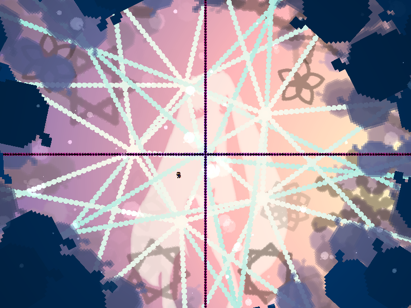
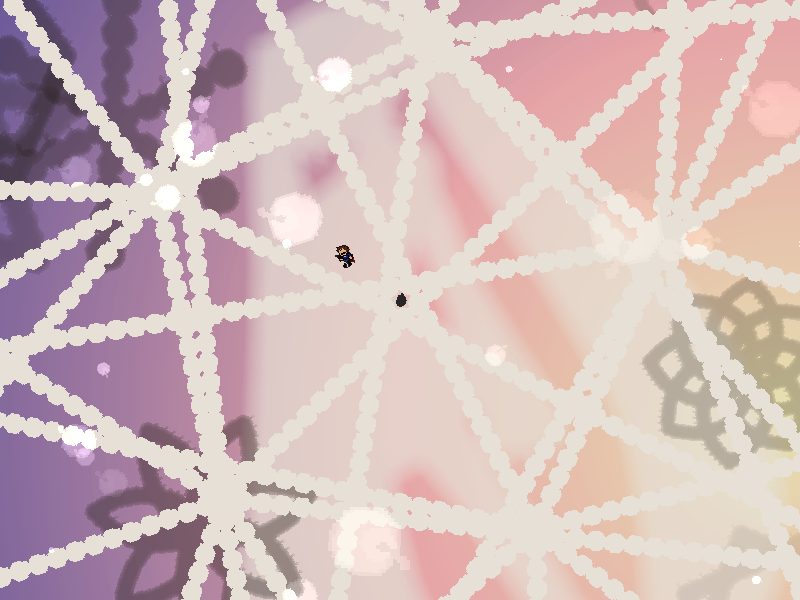
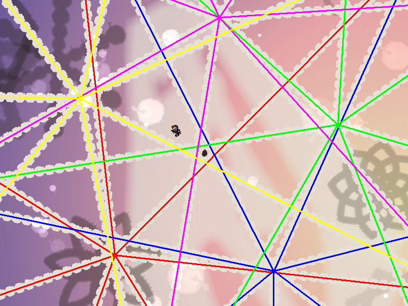
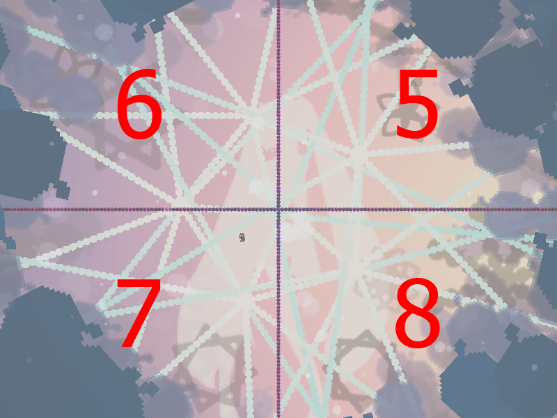
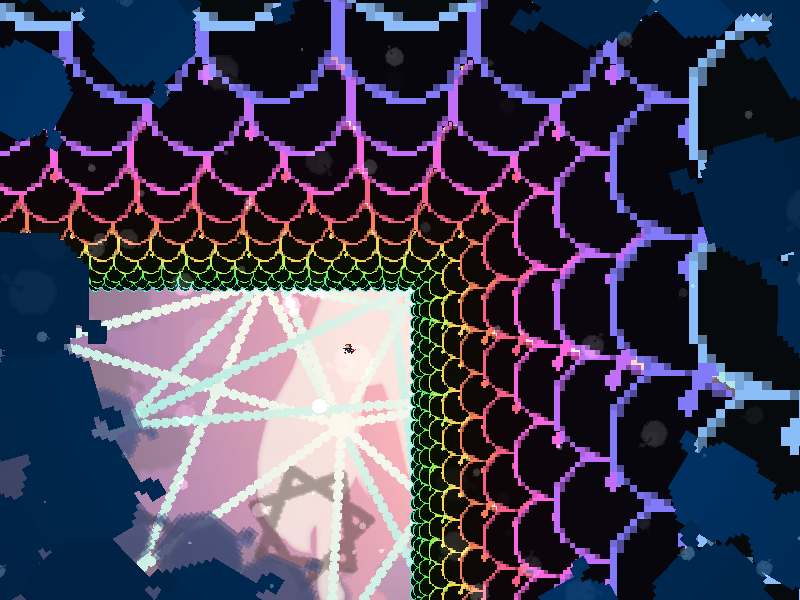

| creator | segment | label | jump |
|---|---|---|---|
| NN | 0:52.30~0:54.30 | Q+A*S | infinite |
回転対称を題材とした択一型の弾幕です。
方向数を見極めることを目的としています。
0:51.90以降、5~8方向に広がる放射状弾幕が画面中央に対する角度について等間隔に4~6個出現します（fig.4-8.1.a）。
出現した放射状弾幕に関して、その方向数が正解の値となります（fig.4-8.1.bに示す状況における正解の値は7）。
なお、これらの放射状弾幕ついては、基準となる角度および画面中央からの距離がランダムであり、また当たり判定が存在しません。


0:53.50~0:54.30における回避可能な領域に関して、正解の値が5の場合は画面右上、6の場合は画面左上、7の場合は画面左下、8の場合は画面右下がそれぞれ対応しています（fig.4-8.2.a, fig.4-8.2.b）。
なお、これらの配置は完全固定であり、正解の値から一意に定まります。

